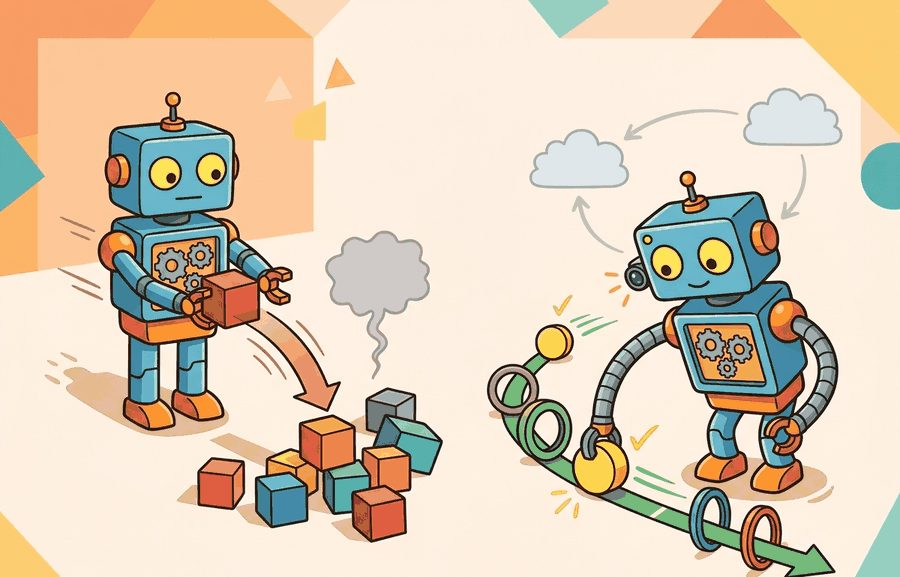
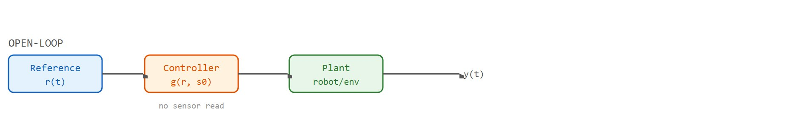

"Open-loop trusts the plan. Closed-loop trusts the plan until the world says otherwise, then adjusts."
Section 7.1

Figure 7.1A: Open-loop vs. closed-loop control for a robot arm: the open-loop version drifts when gravity is mis-modeled; the closed-loop version corrects the joint-angle error on every tick.
The ideas here are extended in section 7.2, which formalizes the error signal, stability margins, and overshoot that determine whether a closed-loop controller is safe to deploy, and in section 7.3, which derives the PID law introduced briefly in the worked example. The closed-loop form depends on timely, accurate state estimates; section 8.6 covers the perception and state-estimation pipeline that makes that feedback possible in practice. This section recurs in Part III alongside domain randomization (section 13.2), where open-loop policies must implicitly compensate for the disturbances that a sensor-based feedback loop would otherwise correct directly.
Big Picture
A robot arm commanded to pour exactly 200 ml of water will spill if its joint model is even slightly wrong, because nothing corrects the drift mid-motion. Add a force sensor and a feedback loop, and the arm adjusts on every millisecond tick, finishing the pour accurately even on an uneven surface. That gap, between blind execution and continuous correction, is the heart of this section. Modern embodied AI systems fail in deployment not because their neural networks are weak but because they rely on open-loop assumptions that collapse the moment physics disagrees. Here you will build the formal vocabulary, trace the feedback loop as a computation graph, and implement both control modes so you can predict exactly when each one breaks. Figure 7.1A shows this contrast on a robot arm: the open-loop version drifts when gravity is mis-modeled, while the closed-loop version corrects the joint-angle error on every tick.
Tape a robot's joint commands to a perfect plan, hit play, and walk away: it will reach the target only in a universe where friction, payload, and gravity match your model to the digit, which is to say never. The fix is to let the robot keep asking the world what just happened. This section turns the technical contract for open-loop versus closed-loop control into a usable mental model. It defines the object of study, connects it to the agent loop, and tests it with a compact implementation.
The key question in Open-loop vs. closed-loop control is practical: what must the agent know, what can it observe, what action is available, and what evidence shows that the action worked under the stated conditions?
Action Is The Test
A representation earns its place when it changes the measurable action interface. In Open-loop vs. closed-loop control, the reader should keep asking which decision becomes easier, safer, or more reliable.
Theory
For Open-loop vs. closed-loop control, the practical design rule is to make the interface inspectable before optimization begins: inputs, outputs, units, latency, bounds, and failure labels should all be visible in the saved artifact.
An open-loop controller commits to an action sequence before observing any consequences: $a_{0:T-1}=g(r_{0:T-1}, \hat s_0)$. It works only when the plant model, initial state, and disturbances are all predictable, where the plant is the physical system being controlled (the robot and its environment), the thing that turns a commanded action into a measured outcome. On a physical robot, small modeling errors in friction, joint compliance, or payload mass do not average out. They accumulate across every time step. A 1-degree joint-angle error at step 1 grows into a centimeter of end-effector displacement by step 50. To put that in context, an open-loop imitation policy on a real robot often needs on the order of tens of thousands of demonstration episodes to statistically average out disturbances that a simple closed-loop PID can reject within a few hundred control ticks, though the exact ratio depends heavily on the task and disturbance magnitude. The open-loop plan has no mechanism to notice or correct that drift. Contact-rich tasks fail for exactly this reason: the world pushes back in ways the pre-committed sequence cannot accommodate. The planner solves for the entire command trajectory offline, typically by inverting a dynamics model or running trajectory optimization once. At execution time it replays each $a_k$ at the scheduled tick with no sensor read. The robot follows the tape regardless of what happened on the previous step.
Checkpoint
So far: open-loop control commits to a full action sequence offline from an initial state estimate, accumulates any modeling error unchecked because nothing observes the outcome mid-run, and therefore fails predictably on contact-rich or disturbance-heavy tasks; the next paragraph introduces the closed-loop alternative that reads state on every tick to correct that drift.
A closed-loop controller takes a different approach. It computes $a_t=\pi(\hat s_t,r_t)$ after each new state estimate, so perception and state estimation can correct drift, slip, delay, and contact surprises. This is the difference between blind execution and continuous correction. It determines whether small modeling errors stay small or compound into large failures. A controller that never reads a sensor is not controlling the robot; it is narrating a plan the robot may have already abandoned. Figure 7.1B contrasts the two architectures side by side: the open-loop path runs left to right with no return arrow, while the closed-loop path adds a sensor that feeds the measured state back into the controller on every tick.

Figure 7.1B: Open-loop control (top) commits to an action sequence from the initial state with no sensor read. Closed-loop control (bottom) reads sensor state each tick and feeds the error back into the controller, correcting drift continuously.
Open Loop Is A Promise, Closed Loop Is A Conversation
Open-loop control is a promise that the world will behave as predicted. Closed-loop control treats every observation as a chance to renegotiate the next action. The engineering question is not which one sounds smarter, but whether sensing is timely and reliable enough to improve the next command.
A common assumption is that closed-loop control is always superior to open-loop control because feedback "corrects mistakes." In embodied AI this is wrong: closed-loop control is only better when the sensor observations arrive faster than errors accumulate and when the state estimator is more trustworthy than the original plan. A wrist-camera feedback loop running at 10 Hz cannot correct a 1 kHz vibration; a noisy force sensor can drive a PID controller into oscillation that an open-loop trajectory would have avoided entirely. The correct mental model is that closed-loop control trades the assumption of a perfect plant model for the assumption of timely and accurate sensing; when sensing is slow, noisy, or intermittent, a well-designed open-loop plan can be more reliable.
Mechanism
The mechanism in Open-loop vs. closed-loop control is the contract between representation and action. Name what enters the module, what leaves it, which assumptions make that transformation valid, and which log would reveal a bad handoff.
Worked Example
The cleanest way to feel the difference between an open-loop plan and a closed-loop controller is to run both on the same plant with the same unmodeled disturbance. Code Fragment 7.1.1 simulates a 1D point mass (
, where the proportional term $K_p e(t)$ pushes back in proportion to the current error, the integral term $K_i\!\int e\,dt$ accumulates past error to cancel a steady-state offset, and the derivative term $K_d\,\dot e(t)$ resists how fast the error is changing to damp overshoot; section 7.3 derives this law from first principles, this section only needs the three terms to read the code below, with an anti-windup clamp (a guard that stops the integral term from continuing to accumulate while the actuator is saturated, i.e. already commanding its maximum force). A constant 2 N disturbance enters both runs.
importnumpyasnp# 1D point mass m*xdd = u (force). Compare an open-loop plan with a PID loop.m,dt,T=1.0,0.02,4.0n=int(T/dt)kp,ki,kd=12.0,4.0,6.0u_max=8.0# actuator force limit (saturation)x_ref=1.0# step setpoint, metersdefstep(x,v,u):a=u/mreturnx+v*dt,v+a*dtdefopen_loop(dist):# Bang-bang plan that "should" reach x_ref if the model were exact.u_plan=np.where(np.arange(n)<n//2,u_max,-u_max)x,v,xs=0.0,0.0,[]forkinrange(n):x,v=step(x,v,np.clip(u_plan[k]+dist,-u_max,u_max))xs.append(x)returnnp.array(xs)defpid(dist):x,v,ei,e_prev=0.0,0.0,0.0,x_refxs,errs=[],[]forkinrange(n):e=x_ref-xei_trial=ei+e*dtde=(e-e_prev)/dtu_unsat=kp*e+ki*ei_trial+kd*deu=np.clip(u_unsat,-u_max,u_max)ifu==u_unsat:# anti-windup: integrate only when not clampingei=ei_trialx,v=step(x,v,u+dist)xs.append(x);errs.append(e);e_prev=ereturnnp.array(xs),np.array(errs)dist=2.0# unmodeled constant force disturbance (N)xs_ol=open_loop(dist)xs_cl,errs=pid(dist)print(f"open-loop final pos = {xs_ol[-1]:+.3f} m (target {x_ref:.1f})")print(f"closed-loop final pos = {xs_cl[-1]:+.3f} m steady error = {errs[-1]:+.4f} m")
open-loop final pos = +35.960 m (target 1.0)
closed-loop final pos = +1.102 m steady error = -0.1026 m
Code Fragment 7.1.1: the same 2 N disturbance pushes the open-loop plan tens of meters past the target, while the closed-loop PID law re-estimates the error every tick and holds the mass near 1 m. Plotting errs against np.arange(n) * dt shows the closed-loop error decaying toward a small residual that integral action keeps shrinking.
Step-Through: closed-loop PID, first three ticks
Trace the pid loop above with the actual numbers (m = 1, dt = 0.02, kp = 12, ki = 4, kd = 6, u_max = 8, x_ref = 1, dist = 2). State starts at x = 0, v = 0, ei = 0, e_prev = 1.
Tick 0: e = 1 - 0 = 1. ei_trial = 0 + 1(0.02) = 0.02. de = (1 - 1)/0.02 = 0. u_unsat = 12(1) + 4(0.02) + 6(0) = 12.08. Clamp to u_max: u = 8 (saturated, so anti-windup keeps ei = 0, NOT 0.02). a = (u + dist)/m = (8 + 2)/1 = 10. x = 0 + 0(0.02) = 0. v = 0 + 10(0.02) = 0.20. Record x = 0, e_prev = 1.
Tick 1: e = 1 - 0 = 1 (x is still 0 because position lags velocity by one step). ei_trial = 0 + 0.02 = 0.02. de = (1 - 1)/0.02 = 0. u_unsat = 12 + 0.08 + 0 = 12.08 -> clamp u = 8 (still saturated, ei stays 0). a = 10. x = 0 + 0.20(0.02) = 0.004. v = 0.20 + 0.20 = 0.40. Record x = 0.004.
The takeaway you can see by hand: while the actuator is saturated the integrator is frozen, so windup never builds; only once u_unsat falls below 8 N (later in the run, as the mass approaches the target and the error shrinks) does ei begin to accumulate and quietly cancel the constant 2 N disturbance, leaving the small steady-state residual the code prints.
When porting the PID loop above to ROS 2 control, set the controller's update_rate parameter in your YAML config to match the hardware interface's actual publish frequency exactly. If the two differ, the derivative term de/dt divides by the wrong dt, inflating or shrinking kd's effective gain and causing unexpected oscillation or sluggishness that is invisible in pure-Python simulation. Run ros2 topic hz /joint_states to measure the real publish rate before locking in the YAML value.
Library Shortcut
Once you trust the hand-built loop, three libraries take over different jobs on real robots. python-control gives you step_response and margin to check the same point-mass loop for overshoot and gain margin before it touches hardware. Drake's Simulator plus MultibodyPlant runs the identical PID against a contact-rich model (used for the Atlas and Allegro-hand work at the Toyota Research Institute) so windup and saturation show up against real geometry. ROS 2 control's ros2_control hardware interface then maps the same gains onto an actual arm such as the Franka Emika Panda or the low-cost SO-100, where update_rate mismatch, not the gains, is the usual cause of oscillation.
Practical Recipe
The worked example showed open-loop and closed-loop behavior on one toy plant; turning that intuition into a dependable workflow on real hardware means fixing the order of operations before any controller is tuned.
Write the observation, action, and success metric before choosing a model.
Build a baseline that is simple enough to debug by inspection.
Add the library implementation only after the baseline behavior is understood.
Record failures as structured cases: perception error, state error, planning error, control error, or evaluation error.
Run at least one perturbation test before trusting the result.
Common Failure Mode
The common mistake in Open-loop vs. closed-loop control is to celebrate the component score before checking the closed-loop handoff. The failure usually appears at the boundary: stale state, wrong frame, delayed action, saturated actuator, or metric that ignores the real task cost.
Think of integral windup like pressing harder and harder on a car accelerator while the wheels spin on ice. The engine is already at its limit, yet you keep pushing the pedal further down. The moment the tyres grip again, all that stored pedal position launches the car forward in a sudden lurch. The anti-windup clamp is the discipline of keeping your foot exactly at the traction limit, not beyond it, so the instant grip returns the response is proportional and controlled, not explosive.
Common Pitfall
Integral windup is the most frequently overlooked closed-loop failure. When an actuator is saturated (for example, a motor at its torque limit), the integral term keeps accumulating error as if the actuator were still responding. When saturation lifts, the accumulated integral drives a large overshoot that can destabilize the system. The fix is anti-windup clamping: stop accumulating the integral whenever the commanded output exceeds the actuator limit. Without this guard, a well-tuned PID on a benchtop test plant can become dangerously oscillatory on the real robot where torque limits are tighter.
Practical Example
A robotics team using Open-loop vs. closed-loop control should log not only final success, but intermediate observations, chosen actions, controller status, and recovery events. The logs reveal whether the method is solving the task or merely passing the easiest episodes.
Real-World Application: surgical robotics
Intuitive Surgical's da Vinci platform runs its instrument tips under tight closed-loop position and force feedback: the surgeon's hand motion is a reference, and encoders plus a kinematic model close the loop hundreds of times per second to reject tremor and cable stretch. A purely open-loop replay of the commanded path would let unmodeled tendon compliance accumulate into millimeter tip errors, which is unacceptable when operating millimeters from a vessel.
Memory Hook
For open-loop vs. closed-loop control, the useful test is simple: could a teammate point to the log line, plot, or trace that proves the idea changed the agent's next action?
Research Frontier
Adaptive replanning frequency for visuomotor policies (2024-2025). Building on action-chunking ideas from Diffusion Policy and ACT, recent work asks how often a policy must replan to remain effectively closed-loop. Pi0 (Black et al., 2024, Physical Intelligence) demonstrates that a flow-matching policy on a fleet of dexterous manipulation tasks selects its own chunk length at inference time, achieving closed-loop correction rates that adapt to contact uncertainty rather than running at a fixed period. The open question is how to analytically bound the maximum safe chunk length given a disturbance spectrum, sensor latency, and actuator bandwidth without exhaustive hardware trials.
Event-triggered and asynchronous feedback architectures (2024-2026). Rather than sampling feedback at a fixed rate, event-triggered control fires a sensor read only when an estimated state deviation exceeds a threshold, dramatically reducing communication and compute load on resource-constrained platforms. Recent hardware experiments from ETH Zurich (Gehring et al., 2024, on ANYmal-D) show that event-triggered proprioceptive feedback for legged locomotion reduces onboard bandwidth by roughly 60 percent while maintaining stability on irregular terrain. An open problem for a PhD student: deriving tight triggering thresholds for learned neural policies whose Lipschitz constants are unknown and whose internal representations do not map cleanly onto physical state variables.
Residual and corrective closed-loop layers over open-loop foundation policies (2025). Large visuomotor foundation models (e.g., OpenVLA, Octo) are trained to produce single-step or short-horizon actions but lack explicit feedback structure. A 2025 direction, explored by groups at UC Berkeley and CMU, wraps a lightweight residual controller around a frozen foundation policy: the foundation provides a nominal open-loop command, and a fast low-dimensional PD or impedance layer corrects for contact force error at 200-500 Hz. This separates generalization (handled by the large model) from disturbance rejection (handled by classical feedback), but raises the open problem of how to learn the residual gain schedule so that the corrective layer does not fight the foundation model's intended trajectory.
Self Check
Can you name the observation, state estimate, action, success metric, and most likely failure mode for Open-loop vs. closed-loop control? If not, the system boundary is still too vague.
Production Pattern
Those failure modes are not isolated bugs; they are symptoms of where this control choice sits in the larger robotics stack, which is where the production pattern begins.
Open-loop vs. closed-loop control sits inside the Part II robotics contract: geometry defines where things are, kinematics defines what motion is possible, dynamics defines what motion costs, control defines how errors are corrected, and sensing defines what the agent can know on time.
Where this choice bites in a deployed stack
Open-loop plans stake everything on disturbance assumptions; closed-loop controllers stake everything on measurement and timing contracts. Either way the choice comes with an intuitive role, a formal interface, a runnable check, and a reproducible failure mode, so any reader can locate the exact assumption their deployment violates.
Consider a specific case. The Boston Dynamics Spot quadruped uses closed-loop leg controllers running at roughly 1 kHz. Each one reads joint encoders and Inertial Measurement Unit (IMU) data to correct foot placement within milliseconds of ground contact. An open-loop gait script replays a fixed joint trajectory, so it fails on any surface that differs from the recording surface. Unmodeled tendon compliance and ground reaction forces accumulate into a pose error, and a 1 kHz feedback loop can typically correct that error before it grows large enough to cause a fall, provided the disturbance itself does not exceed the actuator's torque limit. The same principle appears at slower timescales in robotic manipulation. OpenAI's Dactyl hand (2019) relied on randomized simulation training precisely because its open-loop policy could not assume exact finger contact geometry. The policy therefore had to internalize a distribution over disturbances rather than depend on any single model being correct.
Mechanism To Watch
For Open-loop vs. closed-loop control, control closes the loop between estimated state and action. Keep reference, measured state, error signal, control law, actuator limits, and safety fallback separate in the evidence record.
Library Choices And Verification Checks
Tool or Library
What It Handles
Verification Check
python-control
analyzes linear systems, transfer functions, state-space models, and feedback loops
Verify units, sample time, poles, stability margin, and reference scaling.
CasADi
formulates optimization-based controllers with constraints and horizons
Verify constraints, warm start, solver status, and deadline behavior.
Drake
models dynamical systems, multibody plants, optimization, and controllers
Verify scalar type, plant finalization, frame convention, and solver status.
do-mpc
formulates optimization-based controllers with constraints and horizons
Verify constraints, warm start, solver status, and deadline behavior.
ROS 2 control
supports practical work on Open-loop vs. closed-loop control
Verify the library output against the hand-built baseline on one small case.
Use this recipe when turning Open-loop vs. closed-loop control into code, a simulator experiment, or a robot diagnostic. The point is not to use every library. The point is to keep the hand-built baseline and the maintained-tool path comparable.
Write the control objective, measured state, actuator command, update rate, and saturation policy.
Run a step-response test before adding learning, with overshoot, settling time, and steady-state error logged.
Compare the hand controller with python-control, CasADi, Drake, do-mpc, or ROS 2 control on the same plant model.
Record latency, missed deadlines, saturation events, constraint violations, and recovery actions.
Only compare controllers and policies when they share sensors, action limits, disturbance tests, and safety checks.
Evidence Gate
For Open-loop vs. closed-loop control, compare methods only through one saved artifact that preserves the inputs, outputs, units, timestamps, latency budget, configuration, seed, metric definition, and failure labels relevant to this section. The comparison is meaningful only when the same script evaluates the same panel.
Exercise Extension
Extend the section exercise by adding one perturbation specific to Open-loop vs. closed-loop control and one latency or uncertainty check. Save the result in the EvidenceRecord schema, then explain which library output you trust and why.
An open-loop plan can look perfect in simulation because no observation is allowed to contradict it. Test it with a pose offset, a delayed actuator command, and a small unmodeled disturbance, then compare the same trial under a closed-loop policy that re-estimates state after each action. If the two disagree, inspect sensing latency, frame conventions, actuator saturation, and the exact point where feedback re-enters the decision loop before changing the model.
Technical Core
Open-loop vs. closed-loop control needs a topic-native core: variables, equations or system contracts, an algorithmic procedure, an expected output, and a failure diagnosis. Figure 7.1.T summarizes the chain this section must preserve when moving from a teaching example to a real embodied system.
Figure 7.1.T: A controller is only as trustworthy as its weakest link in this chain: vague assumptions or missing evidence quietly invalidate the algorithm downstream, so each block must be made explicit before the control law can be believed on hardware.
Formal Object
Open-loop: choose $a_{0:T-1}$ once from $\hat s_0$ and a reference $r_{0:T-1}$. Closed-loop: update $\hat s_t=h(\hat s_{t-1},a_{t-1},o_t)$ and choose $a_t=\pi(\hat s_t,r_t)$. The closed-loop form is more robust only when $o_t$ arrives fast enough and the estimator is trusted more than the original prediction.
Controller evaluation loop
Define the reference, measured state, error signal, actuator command, update rate, and saturation policy.
Run a step or disturbance response before adding learning.
Log overshoot, settling time, steady-state error, latency, saturation, and recovery behavior.
Compare PID, LQR, or MPC only under the same plant, sensors, limits, disturbance panel, and metric code.
Technical Contract For Open-loop vs. closed-loop control
Contract Field
What To Specify
Why It Matters
State and observation
Variables, units, timestamps, frames, and uncertainty.
Prevents a model score from being mistaken for robot capability.
Action interface
Command type, limits, update rate, and safety fallback.
Makes the learned or planned output executable.
Evidence artifact
Trace, metric, configuration, seed, and failure label.
Allows baseline and library path to be compared in one pass.
Shows the practical library route after the mechanism is understood.
For Open-loop vs. closed-loop control, expected output is a trace where the relevant error decreases, overshoot stays within the design bound, and actuator commands remain within limits under the stated timing budget.
Failure Mode To Test
Open-loop vs. closed-loop control should be stress-tested under delay, integral windup, actuator saturation, unmodeled friction, and reference-frame mismatch before the nominal trace is trusted.
Section References
Core references for Open-loop vs. closed-loop control: Modern Robotics; Murray, Li, and Sastry; Siciliano et al.; LaValle; and official documentation for Drake, MuJoCo, Pinocchio, CasADi, python-control, GTSAM, ROS 2, and OpenCV as applicable.
Use these references to check notation, frame conventions, units, solver assumptions, and maintained-library behavior.
Key Takeaway
Open-loop vs. closed-loop control is useful when it makes the perception-action loop more reliable, not when it merely adds a more impressive model name.
Exercise 7.1.1
Design a method-matched experiment for Open-loop vs. closed-loop control. Specify the environment, observations, actions, metric, one perturbation, and the library output you would compare against the hand-built baseline.
Project Ideas
Beginner (weekend): PID cart-pole balancer in Gymnasium. Build a PID controller that keeps the classic CartPole-v1 pole upright using the angle and angular velocity observations as the error signal. The key challenge is tuning Kp, Ki, and Kd purely from step-response data rather than a dynamics model, since the pole mass and rod length differ from any textbook example.
Intermediate (1-2 weeks): open-loop vs. closed-loop reaching in MuJoCo. Use the MuJoCo reacher environment to implement a joint-space trajectory planner (open-loop) and a PID joint controller (closed-loop), then compare final end-effector error across 100 randomized goal positions with a 0.5 N disturbance force injected mid-motion. The key challenge is matching the controller update rate to MuJoCo's physics timestep and logging saturation events so you can attribute residual error to windup rather than gains.
Intermediate (1-2 weeks): closed-loop pick-and-place with LeRobot and ROS2. Deploy a wrist-camera feedback loop on a low-cost SO-100 arm using the LeRobot inference stack and a ROS2 control node, then measure how much pose error at grasp is recovered by re-estimating object position on each frame versus replaying a single recorded trajectory. The key challenge is synchronizing the camera publish rate (ros2 topic hz) with the controller update period so the derivative term uses the correct dt.
Lab: Watch open-loop drift turn into closed-loop correction
Goal: Feel, empirically, the moment a feedback loop saves a motion that an open-loop plan loses, and find the disturbance level where each control mode breaks.
Tools needed: Python with numpy and matplotlib (no robot required). Start from Code Fragment 7.1.1 in this section; optionally install control (python-control) for the stretch step.
Steps and what to vary: (1) Run both controllers at dist = 2.0 and plot xs_ol and xs_cl against time on one axis. (2) Sweep the disturbance from dist = 0.0 to 8.0 in steps of 0.5 and record each final position. (3) Sweep the control rate by changing dt from 0.005 to 0.1 while holding the gains fixed. (4) Stretch: feed the same plant to python-control's step_response and read off the predicted overshoot.
What to observe: The open-loop final position grows roughly linearly with the disturbance and never recovers, while the closed-loop final position stays pinned near 1.0 m until the disturbance approaches the actuator limit u_max = 8, where saturation finally defeats feedback too. As you increase dt, watch the closed-loop run start to oscillate and then diverge: that is the sampling-rate ceiling described in the warning callout above, made visible as a single failing plot.